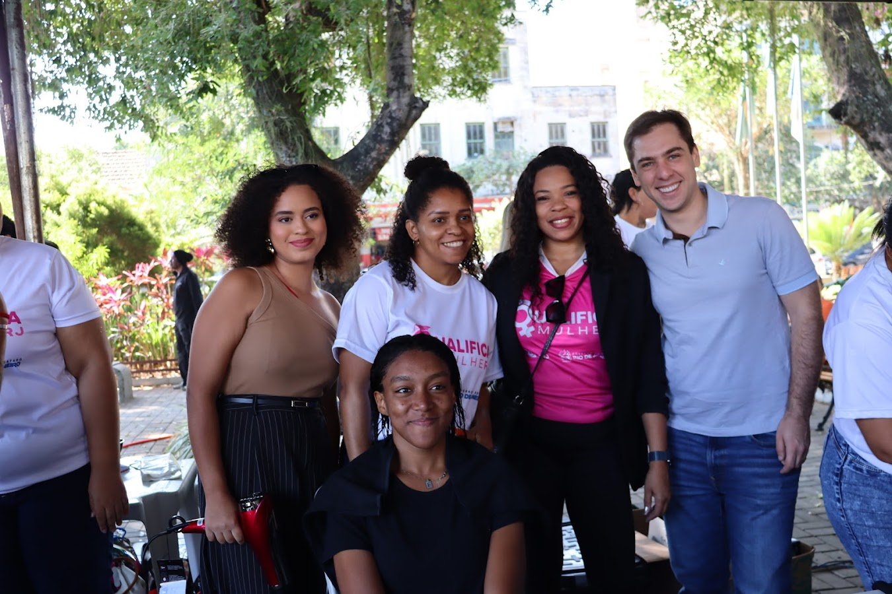
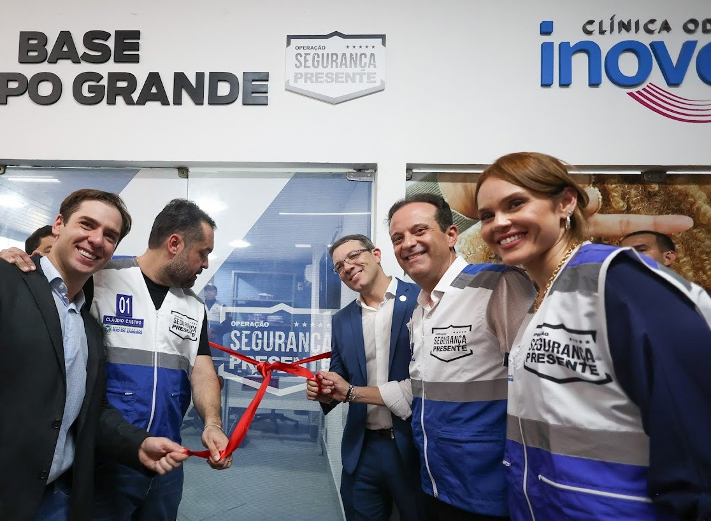
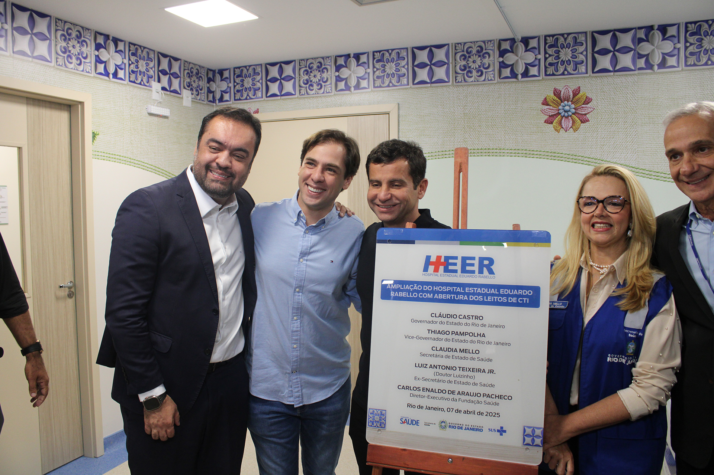
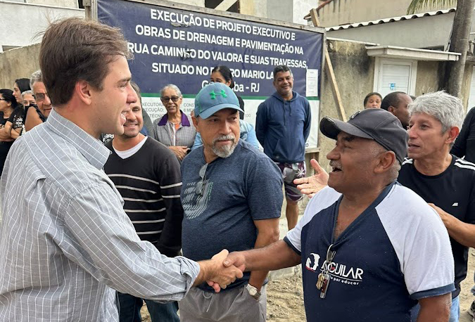
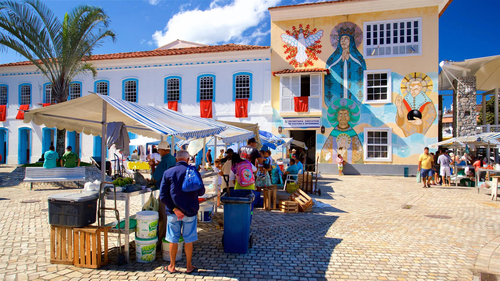

2014
Primeira eleição
Eleito deputado estadual em sua primeira disputa eleitoral, com 32.066 votos.

Advogado, nascido em Padre Miguel, pai de Jorginho e Helena e deputado estadual em seu terceiro mandato. Sua trajetória reúne experiência parlamentar e passagens pelo Executivo municipal, com atuação em diferentes áreas do Estado do Rio de Janeiro.

Jorge Felippe Neto nasceu no Rio de Janeiro, em Padre Miguel, é advogado e pai de Jorginho e Helena. A biografia institucional da ALERJ registra sua aproximação com a vida pública desde jovem, acompanhando a trajetória do avô, o vereador Jorge Felippe.
Foi eleito pela primeira vez para deputado estadual em 2014. Ao longo da carreira também passou pelo Executivo municipal, à frente das secretarias de Conservação e Meio Ambiente e de Trabalho e Renda, antes de retornar à Assembleia Legislativa.
Três mandatos na Assembleia Legislativa e uma trajetória eleitoral iniciada em 2014. Os números registram diferentes etapas de sua atuação na política fluminense.
Ao longo dos anos, a atuação parlamentar se somou à experiência no Executivo municipal, em uma trajetória marcada por eleições, gestão pública e retorno à Assembleia Legislativa.
Eleito deputado estadual em sua primeira disputa eleitoral, com 32.066 votos.
Assume a Secretaria Municipal de Conservação e Meio Ambiente do Rio.
Reeleito deputado estadual com 43.099 votos.
Assume a Secretaria Municipal de Trabalho e Renda.
Reeleito para a ALERJ com 35.703 votos.
Ingressa no PL em abril e comunica candidatura a deputado estadual nas redes oficiais.
A atuação reúne iniciativas, projetos e debates em diferentes frentes. Segurança, Trabalho e Renda e Defesa das Mulheres aparecem entre os temas de maior destaque, ao lado de saúde, meio ambiente, regularização fundiária, proteção animal e infraestrutura.
Projetos, fiscalização e conteúdos ligados à segurança pública e à presença do poder público nos bairros.
Qualificação profissional, centros de emprego e políticas voltadas à geração de oportunidades.
Propostas de proteção, prevenção à violência e acesso a informações e serviços públicos.
Atendimento, prevenção e expansão de equipamentos e serviços de saúde.
Comissão de Defesa do Meio Ambiente, mobilidade sustentável e governança ambiental.
Segurança jurídica da moradia e iniciativas de regularização em diferentes regiões do estado.
Projetos e fiscalização de políticas de proteção e bem-estar animal.
Demandas de bairros, urbanização, mobilidade e melhorias de serviços públicos.
Nascido em Padre Miguel, Jorge Felippe Neto mantém uma trajetória ligada à Zona Oeste. Explore alguns dos bairros presentes em ações, notícias e iniciativas registradas ao longo de sua atuação pública.
Da proteção às mulheres à segurança pública, passando por trabalho, regularização fundiária e meio ambiente, estas iniciativas representam algumas das frentes presentes na atuação parlamentar e administrativa de Jorge Felippe Neto.

Projeto que prevê notificação a mulheres ameaçadas sobre eventual libertação de companheiros presos, aprovado em primeira discussão na ALERJ em março de 2026.
Saiba mais →
O site oficial destaca atuação relacionada à segurança pública na Zona Oeste e registra a chegada do Segurança Presente a Bangu.
Saiba mais →A biografia da ALERJ registra parcerias de formação profissional, reabertura de Centros de Emprego e atuação em políticas de trabalho e renda.
Saiba mais →
A biografia institucional registra proposta apresentada no primeiro mandato determinando regime de horário integral nas escolas estaduais.
Saiba mais →
O acervo oficial reúne ações e projetos voltados à segurança jurídica da moradia na capital e em municípios do interior.
Saiba mais →
Em 2026, a Comissão de Meio Ambiente presidida por Jorge Felippe Neto promoveu ações de governança ambiental e debates sobre desenvolvimento sustentável.
Saiba mais →O ano reúne novos projetos, debates na Assembleia Legislativa, atividades institucionais e a candidatura a deputado estadual. Acompanhe os principais acontecimentos registrados ao longo de 2026.
Em publicação no perfil oficial do Instagram, Jorge Felippe Neto comunicou sua candidatura a deputado estadual no Rio de Janeiro para as eleições de 2026.
Informação publicada em canal oficialProjeto de autoria de Jorge Felippe Neto aprovado em primeira discussão.
A mudança partidária é registrada pela ALERJ em abril de 2026.
Participação como presidente do colegiado em discussão sobre a taxa de turismo.
Comissão promove exposição no Palácio Tiradentes reunindo órgãos ambientais.
Acompanhe ações, projetos, entregas e acontecimentos relacionados à atuação pública de Jorge Felippe Neto no Rio de Janeiro.
Entrevistas, registros de atividades públicas e conteúdos sobre o mandato também podem ser acompanhados pelo canal oficial no YouTube.
Consulte os canais institucionais do gabinete e acompanhe as atualizações pelos perfis oficiais nas redes sociais.
Entre em contato com o gabinete parlamentar na Assembleia Legislativa do Estado do Rio de Janeiro.
Acompanhe a atuação, os vídeos e as atualizações de Jorge Felippe Neto pelos canais digitais oficiais.